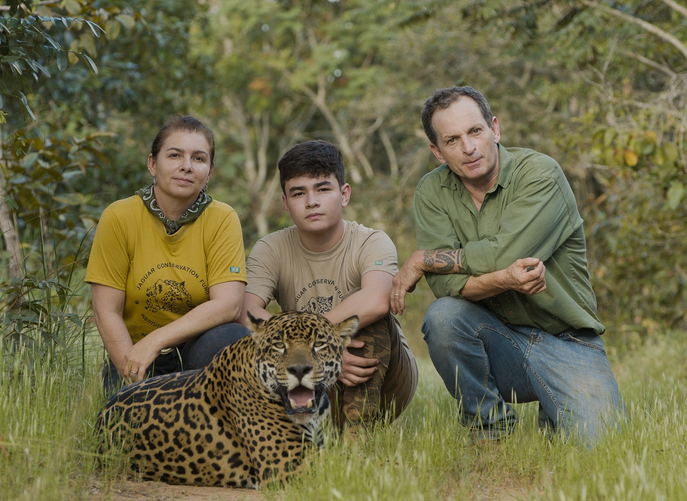
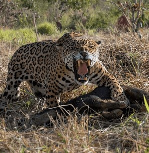
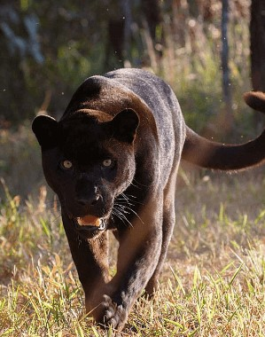
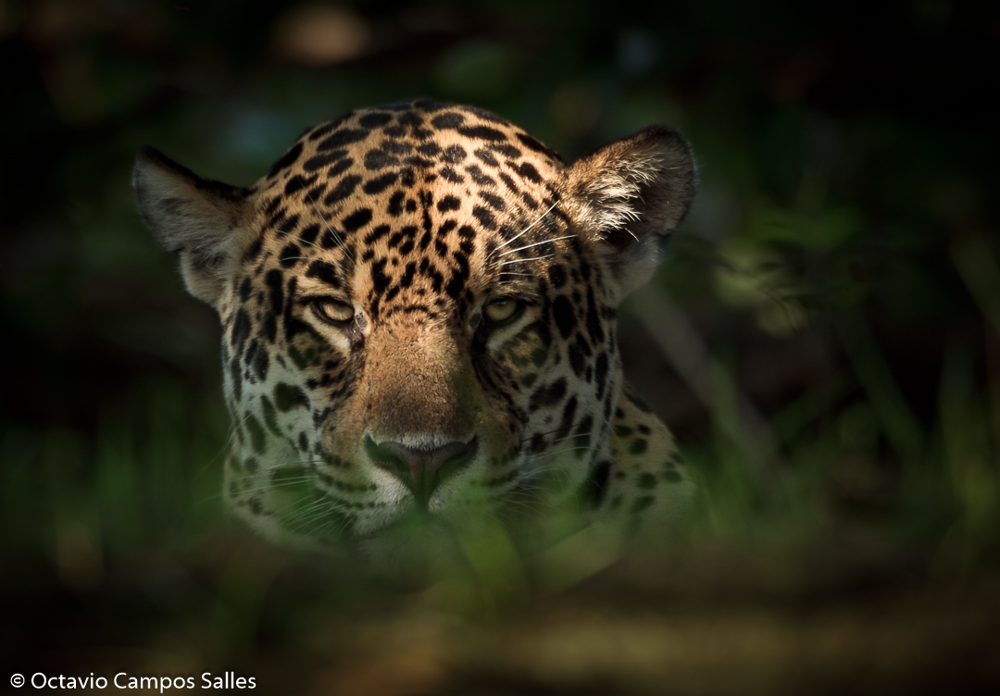

O Instituto Onça-Pintada (IOP) é a única ONG dedicada exclusivamente a promover a conservação dessa espécie, através de pesquisa científica nos biomas onde ela ocorre (Amazônia, Cerrado, Caatinga, Pantanal e Mata Atlântica) (conservação in situ), e também em cativeiro, por meio de seu Criadouro Científico com finalidade de Conservação (conservação ex situ). Saiba mais sobre nosso trabalho e nos ajude conservar a onça-pintada!.
“Promover a conservação da Onça-Pintada, suas espécies de presas naturais e de seus hábitats, ao longo de sua área de distribuição, assim como sua coexistência pacífica com o homem, através de pesquisa e estratégias de conservação.”
“Ser o líder em esforços de conservação da onça-pintada, não somente no Brasil como também ao longo de toda a distribuição geográfica da espécie.“
“O IOP acredita que o ser humano tende a proteger e a preservar o que gosta, se importa ou admira; mas para que isso seja possível, é preciso antes de mais nada, conhecer! O conhecimento nos leva à conscientização e a necessidade de mudança de atitudes.”
